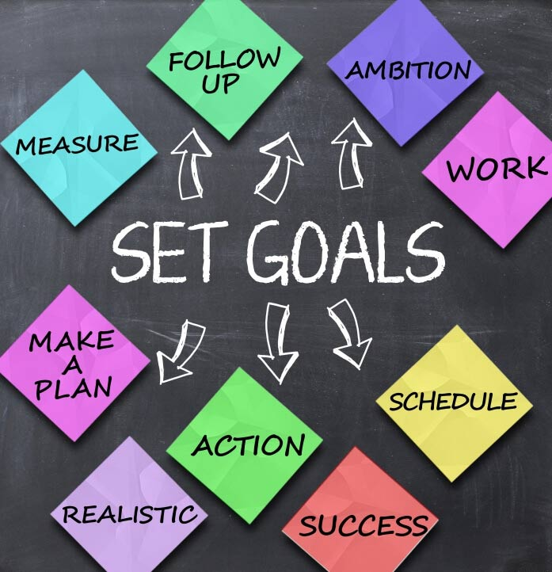

Goal Setting
Set meaningful goals, create actionable plans, and stay motivated on your path to achieving personal and professional success.

Setting goals is a powerful way to turn your dreams into reality and achieve personal and professional success. Here are some key principles and strategies for effective goal setting:
- Specific and Measurable Goals: Clearly define your goals in specific terms and make them measurable so that you can track your progress and know when you have achieved them.
- Realistic and Attainable Goals: Set goals that are challenging yet realistic and attainable. Consider your abilities, resources, and time constraints when setting your goals.
- Time-Bound Goals: Set deadlines or target dates for achieving your goals. This helps create a sense of urgency and motivates you to take consistent action.
- Break Down Goals into Actionable Steps: Divide your goals into smaller, manageable tasks or milestones. This makes them less overwhelming and allows you to make steady progress.
- Write Down Your Goals: Put your goals in writing. This increases commitment, clarity, and accountability. It also serves as a reminder of what you are working towards.
- Track and Review Progress: Regularly review your goals and track your progress. Celebrate milestones achieved and make adjustments if necessary to stay on track.
- Stay Motivated and Persistent: Maintain a positive mindset, stay motivated, and be persistent in the face of challenges or setbacks. Learn from failures and keep moving forward.
By setting clear and actionable goals, you can create a roadmap for success and enhance your focus, productivity, and personal growth. Start setting meaningful goals today and take steps towards a fulfilling and purposeful life.